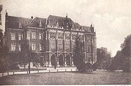
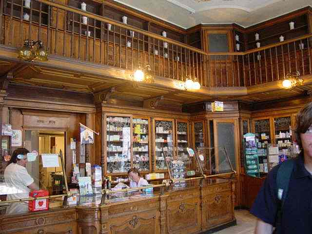
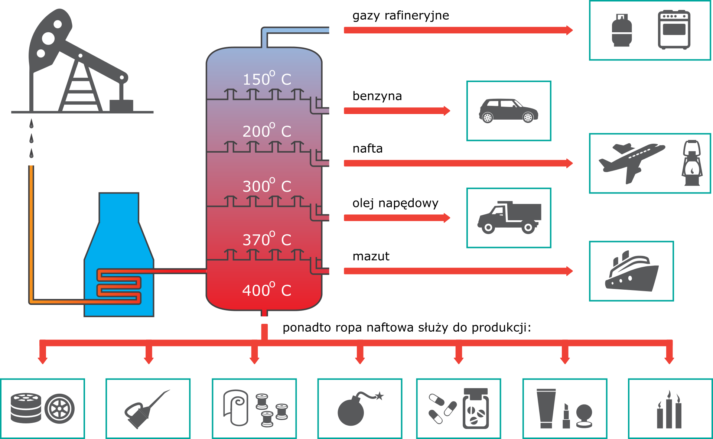
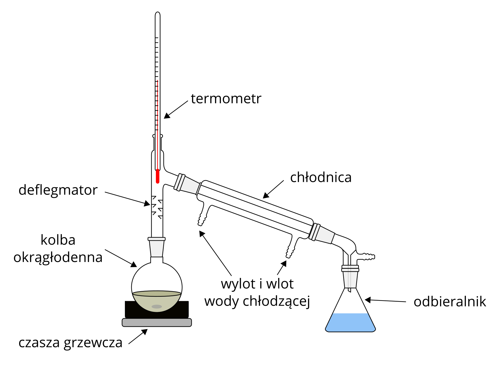

Ignacy uczył się znacznie lepiej od swojego brata. Rodzice zdecydowali, że starszy Franciszek po ukończeniu gimnazjum pójdzie na studia a młodszy Ignacy zdobędzie zawód. Ignacy ukończył w rzeszowskim gimnazjum cztery klasy . Od 27 czerwca 1836 roku podjął praktykę aptekarską w Łańcucie w aptece mgr Antoniego Swobody. Podobno przyczyną tej decyzji mogły być zainteresowania naukami przyrodniczymi. Po czterech latach Łukasiewicz przystąpił do egzaminu tyrocynalnego. Wymagania tego egzaminu obejmowały znajomość receptur, bezbłędne odczytywanie recept, chemię farmaceutyczną, analizę chemiczną prostych związków oraz wiadomości z praktycznej farmacji. Po zdaniu egzaminu przed Gremium Aptekarskim Obwodowym w Rzeszowie powrócił do pracy w aptece łańcuckiej ale nie jako uczeń a pomocnik aptekarski. W 1841 roku objął posadę w aptece obwodowej mgr Edwarda Hubla w Rzeszowie co dawało mu szansę pogłębienia wiedzy fachowej. Gdzie czynił postępy doskonaląc swą wiedzę. Prawdopodobnie już wtedy myślał o rozpoczęciu studiów. Do rozpoczęcia studiów farmaceutycznych konieczne było w tamtym okresie posiadanie dwuletniej praktyki jako pomocnika aptekarskiego po zdaniu egzaminu tyrocynalnego. Swoją pracę w aptece zakończył w 1850 r. i rozpoczął studia na wydziale filozoficznym Uniwersytetu Jagiellońskiego gdzie działało dwuletnie studium farmaceutyczne. W przypadku farmacji dwuletni kurs uprawniający do egzaminu magisterskiego obejmował botanikę, zoologię, mineralogię, naukę o skałach, petrografię, fizykę doświadczalną, wybrane działy fizyki ogólnej, chemię ogólną, chemię farmaceutyczną organiczną i nieorganiczną oraz chemię sądową i farmakognozję.
W XIV wieku apteki były prawie jedynymi instytucjami wyposażonymi w laboratoria i aparaturę chemiczną a ich pracownicy posiadali pełną wiedzę chemiczną. Dlatego to do Mikolascha, na jesieni 1852 roku zgłosili się Żydzi drohobyccy, Abraham Schreiner i Lejba Stierman, z propozycją kupna destylowanej już ropy oraz określeniem przydatności destylatu. Na polecenie właściciela Łukasiewicz i Jan Zeh rozpoczęli żmudne badania i prace doświadczalne nad ropą naftową.

W XIV wieku apteki były prawie jedynymi instytucjami wyposażonymi w laboratoria i aparaturę chemiczną a ich pracownicy posiadali pełną wiedzę chemiczną. Dlatego to do Mikolascha w 1852 roku zgłosili się Żydzi drohobyccy, Abraham Schreiner i Lejba Stierman, z propozycją kupna destylowanej już ropy oraz określeniem przydatności destylatu. Na polecenie właściciela Łukasiewicz i Jan Zeh rozpoczęli żmudne badania i prace doświadczalne nad ropą naftową. Po wielu dniach pracy uzyskali destylat jasnożółty o słabym zapachu i pozbawiony znacznej ilości związków żywicowych występujących w surowej ropie i stwierdzili, że jest taki sam jak drogi specyfik Oleum Petrae album który był sprowadzany z zagranicy. Na wystawie apteki pojawiły się buteleczki z informacją, że uzyskany destylat jest własnego wyrobu i może konkurować z bardzo drogim specyfikiem medycznym sprowadzanym z Włoch Oleum Petrae album. Licząc na wielkie rozpowszechnienie tego produktu wystąpił z inicjatywą założenia spółki: Mikolasch, Zeh, Łukasiewicz. Mimo reklamowania tego środka aptekom nie nadeszło wiele zamówień. Zniechęcony niepowodzeniem Mikolasch wycofał się ze spółki. Łukasiewicz chciał wykorzystać swój wynalazek dla dobra ludzi. Przy pomocy Zeha kontynuował destylowanie ropy do celów oświetleniowych. W 1852 roku udało im się jako pierwszym na świecie wydzielić z ropy naftę. Stosując frakcjonowaną destylację w temperaturze do 250°C w ten sposób uzyskali preparat pozbawiony lekkich frakcji jak benzyna oraz oddzielili go w aparaturze od pozostałych ciężkich węglowodorów (asfalty i oleje techniczne). Później już sam Łukasiewicz skonstruował pierwszą prototypową cylindryczną lampę naftową. Po raz pierwszy zabłysnęła ona w aptece Mikolascha w marcu 1853 roku. Niedługo potem Łukasiewicz i Zeh zgłosili swój wynalazek w Austriackim Urzędzie Patentowym w Wiedniu i dokumentem z 2 grudnia 1853 roku wyjaśniającym, że wydestylowana ropa naftowa nadaje się do bezpośredniego użycia dla celów technicznych. Otrzymali wspólny patent na 2 lata. Potem przeniusł się na tereny gdzie występowała ropa.
Ropa naftowa jest bez wątpienia jednym z najważniejszych surowców wykorzystywanych przez człowieka ze względu na duże znaczenie poszczególnych składników, jakie można z niej pozyskiwać. Stąd też rafinerie ropy naftowej pracują w tzw. procesie ciągłym. Na szczycie kolumny destylacyjnej odbierane są gazy rafineryjne, czyli mieszanina czterech pierwszych alkanów. Ponadto otrzymuje się cztery frakcje: benzynę, naftę, olej napędowy i mazut.
Frakcje o temperaturze wrzenia powyżej 350°C poddaje się destylacji pod zmniejszonym ciśnieniem, uzyskując m.in.: oleje, wazelinę, parafinę, asfalt. Charakterystyka produktów otrzymywanych po destylacji ropy naftowej
Współczesny świat nie jest w stanie na razie funkcjonować bez ropy. Wykorzystuje się ją niemal wszędzie, np.: do produkcji telefonu komórkowego zużywa się 16 litrów ropy naftowej, telewizora – 300 litrów, komputera – 600, jednego samochodu – aż 8 tys. litrów ropy.
Destylacja frakcyjna ropy naftowej jest procesem, który pozwala na oddzielenie od siebie poszczególnych frakcji ropy czyli jej składników np: propan i butan, benzyna, nafta. Podczas tej destylacji surową ropę podgrzewa się do wysokich temperatur a następnie wprowadza się ją do kolumny frakcjonującej w której następuje rozdział składników ropy zależnie od temperatury wżenia. W tej kolumnie związki o wysokiej temperaturze wrzenia skraplają się już w najniższej części kolumny gdzie panuje najwyższa temperatura a związki o niższej temperaturze wrzenia, które są bardziej lotne przechodzą do wyższych i chłodniejszych miejsc kolumny gdzie stopniowo ulegają skraplaniu. Na samej górze kolumny gdzie panuje najniższa temperatura, która jest zbliżona do temperatury otoczenia są odbierane gazowe składniki ropy czyli propan i butan (LPG).

Jakie substancje można wyodrębnić z ropy naftowej?
Ropa naftowa jest mieszaniną wielu substancji chemicznych.

Podczas destylacji frakcyjnej ciecz w kolbie wrze a para skraplająca się w chłodnicy i spływa do odbieralników. Metoda ta pozwala na rozdzielenie składników ropy naftowej na poszczególne frakcje różne destylaty mają inną temperaturę wrzenia i charakterystyczne zapachy. Różnią się barwą (od bezbarwnej, poprzez jasnożółtą, aż do brunatnej) oraz gęstością (gęstość poszczególnych frakcji jest coraz większa). Wszystkie próbki są palne ale czym wyższa temperatura wrzenia to tym trudniej następuje zapłon.
W nocy 31 lipca 1853 roku w lwowskim szpitalu przy świetle lamp naftowych chirurg Zaorski zoperował Władysława Choleckiego, ratując mu tym życie. Dzień ten uchodzi za początek światowego przemysłu naftowego.
Szpital lwowski zakupił od spółki Mikolasch-Łukasiewicz-Zeh 500kg nafty, dokonał zarazem pierwszej transakcji naftowej na świecie.
W trakcie tych badań zdarzył się niebezpieczny wypadek, nastąpił wybuch kociołka z destylowana substancją. Pożar ogarnął całe pomieszczenie i z trudem go ugaszono.